The Score (and tabs) to go along with the diagrams below is available here
The musescore/tabs tuning is 12 string matched reciprocal, but it's simple to translate it to different Free Hands style tunings like 10 string classic
|  | .fbjson file |
|
| .fbjson file |
| .fbjson file |
| .fbjson file |
|  | .fbjson file |

| .fbjson file |